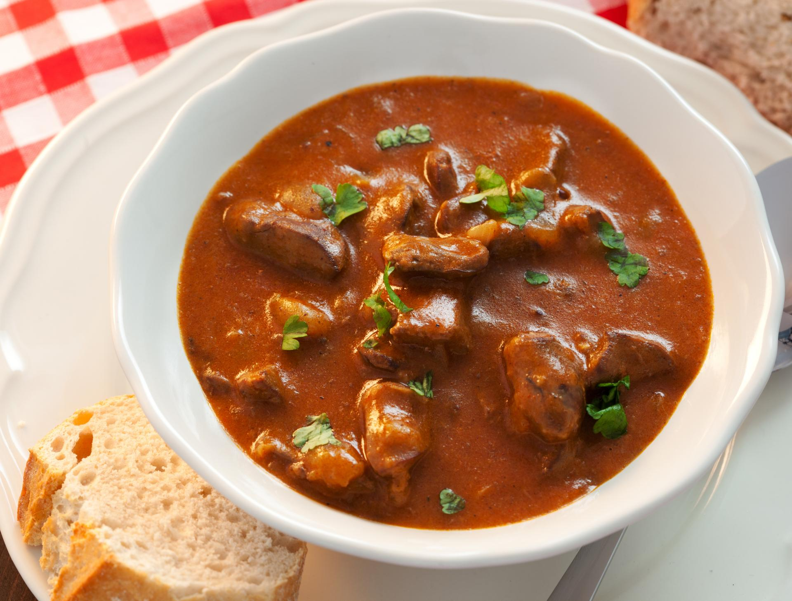

Potrebno je:
Crni luk očistiti i naseckati na kockice. Staviti u nauljenoj šerpi na srednje jakoj vatri da se uprži na 20tak minuta uz stalno mešanje i dodatkom soli i malo vode. Zatim dodati saseckano meso na kockice i izmešati da se sjedini. Nalijte vodom da se sve zajedno krcka i dodajte začine, majčinu dušicu, lovorov list, biber, so, bosiljak. Kada je meso već omekšalo, kesicu za gulaš pomešati sa 1 šoljom vode i dodati u meso. Izmešati da se sjedini i poveze i krčkati još pola sata.
Poslužiti uz zakuvano kukuruzno brašno ili testeninu.